新版本的Text Send (Desktop：3.1.2，Android：3.1.3)已经发布！新增二维码扫描连接功能！
功能
在Linux、Windows、Android三个平台相互传输文字（局域网中，比如同一个Wifi下）。
注意：Windows用户记得防火墙开启54300端口(默认的通讯端口)，教程在这里: 百度经验 | 微软教程)。
Text Send下载：
桌面端 Linux Windows | 安卓端 APK AAB APKS
如果你不知道该下载哪一个，那就下载 Windows 压缩包 和 APK 安装包。
起因
由于Linux是我的主力系统，众所周知Linux上没有腾讯全家桶（有也是用户体验一言难尽），临时传文字需要打开Skype或者Jami，虽然谈不上麻烦，但实属有点牛刀杀小鸡的感觉。即使是Windows有QQ、微信，真的为了临时发一段文字就打开QQ吗？不仅花时间还耗费电脑资源，非常的不痛快。平时工作经常需要临时传输文字，于是我就自己写了一个局域网传输文字的小应用。如果你的电脑没有语音识别，你可以在手机语音识别后用TextSend直接打印在电脑屏幕。Text Send支持电脑手机互连、电脑互连和手机互连。
演示视频
发布信息
基本信息
名称：Text Send
支持平台：Linux、Android、Windows
语言：Java （Java 11 Swing）
许可证：GPLv3
电脑客户端
系统要求：
Linux 或者 Windows。
安卓客户端
系统要求：
Android 5以上。
使用说明
桌面端
按键功能
服务端界面：
- 启动：主键启动并生成二维码。副键启动，但不生成二维码。（注意：这里生成的二维码是猜测的IP地址，实际IP如果不符合，请在客户端 [比如你的手机客户端]中手动填写实际的服务端IP地址）
- 切换：切换到客户端模式。
- 发送：发送消息到客户端。
客户端界面：
- 连接：连接到服务端，需要在文本框中填写IP地址，格式：
192.168.1.1或者192.168.1.1:1234 - 切换：切换到服务端模式。
- 发送：发送消息到服务端
使用方法
注意：客户端和服务端要在同个局域网（比如同一个Wifi）
打开TextSend电脑服务端，配置防火墙，允许外来流量、同意访问网络。
选择服务端口，默认54300端口，可以直接按回车跳过。
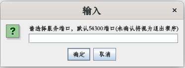
进入主界面，一个小悬浮框。选择你当前网卡的IP后，点击启动，启动Server，手机才能连接。发送是用来向手机发送文字的，发送到手机的文字保存在手机的剪贴板上。
这时会跳出二维码窗口（可能是用浏览器打开的），手机客户端可以扫描二维码直接连接
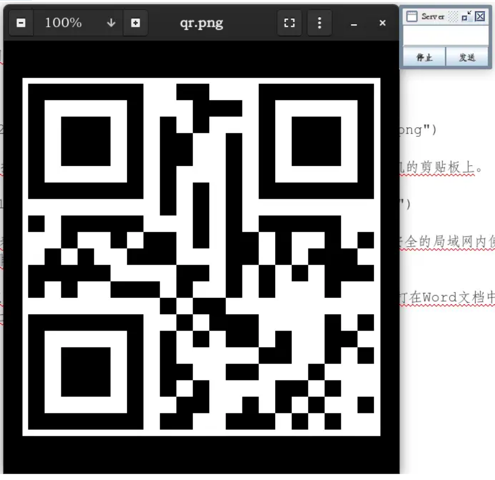
这是客户端界面
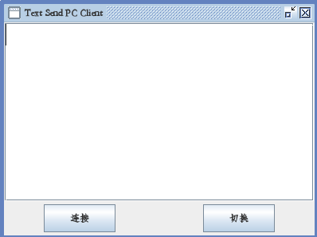
注意 ：只能传文字，采用AES加密文本信息。手机传Emoji表情需要在开头加个文字或者标点符号。强烈建议在家庭等相对安全的局域网内使用，因为即使文本信息我用AES加密处理了，但是服务端应用结构简单，没有鉴权、用户管理等功能，我不排除你的局域网下有人搞事情对吧，但是几率很小就是。
连接好手机后，打开一个Word文档，鼠标在Word文本输入的地方点一下，保证文本输入区域是焦点。这样手机发过来的文字会直接打在Word文档中。如果不小心失去焦点，没输入成功。你只需要右击粘贴就是，因为手机发送的文字也是存在电脑剪贴板上的。
移动端
按键功能
菜单：
- 切换模式：切换客户端/服务端功能
- 关于：显示版本
- 退出：退出Text Send
客户端界面：
- 连接：连接到服务端，需要在文本框中填写IP地址，格式：
192.168.1.1 - 右下角的相机按钮：扫描二维码连接
服务端界面：
- START：启动服务端并生成二维码，等待客户端连接。（注意：这里生成的二维码是猜测的IP地址，实际IP如果不符合，请在客户端 [比如对方的手机客户端]中手动填写实际的服务端IP地址）
使用方法
手机连接电脑
- 首先 ！！电脑和手机要在 同一个局域网 ！！比如同一个Wifi。
- 配置好电脑服务端后(电脑端应用主界面点了“启动”)， 3.1.0版本可以弹出二维码，点击右下角图标进行二维码扫一扫连接。请注意：这里的二维码是服务端猜测的服务端IP地址，如果与实际不同请手动修改。
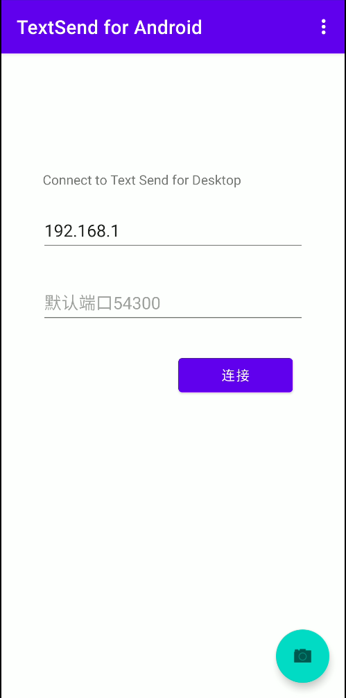
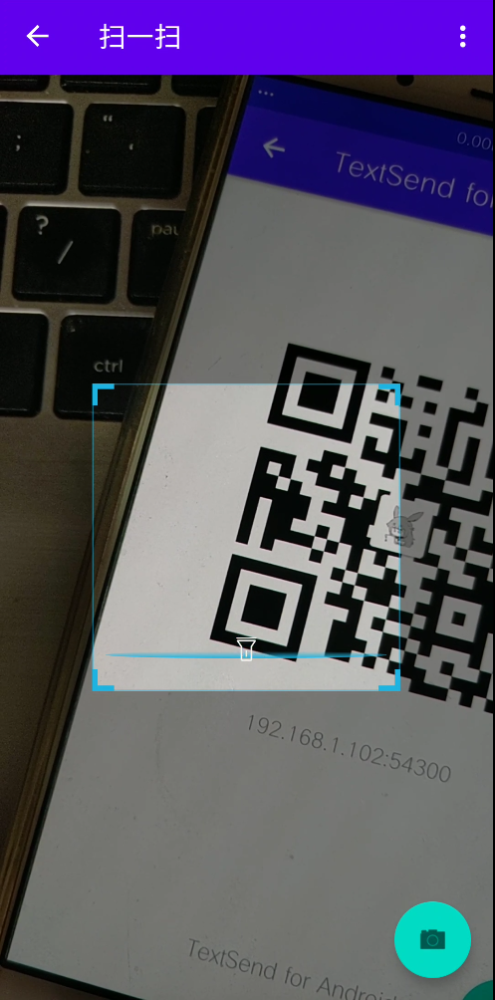
关于如何查看电脑实际IP地址，请看Gitee ReadMe或者百度。
连接成功后便可以互传消息，电脑发送到手机的文字存在手机的剪贴板，点击粘贴就行了。
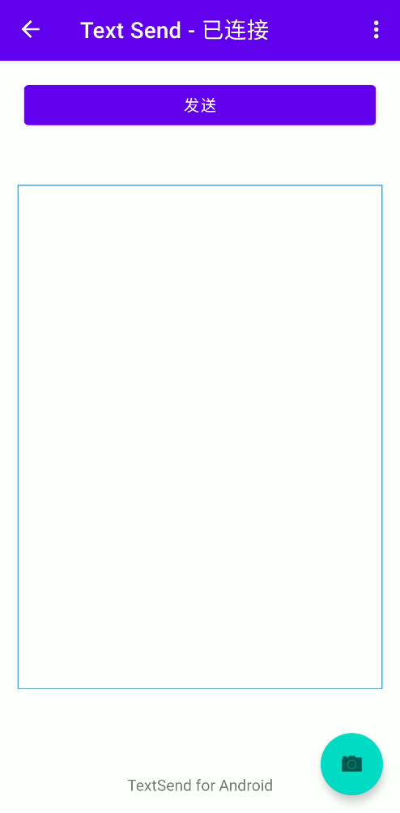
手机连接手机
- 首先，两台手机在同一个Wifi下，一台手机点击 菜单-切换模式。
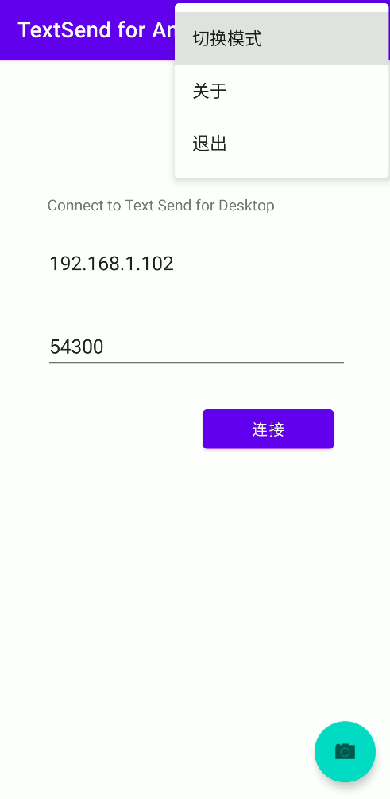
- 来到服务端页面：
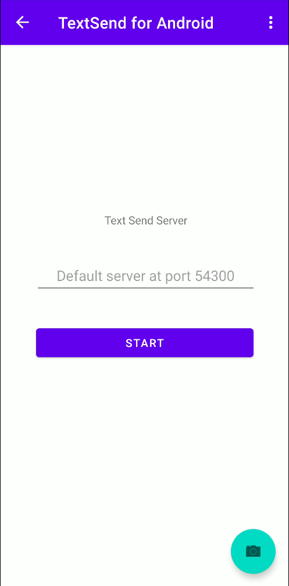
- 点击Start启动服务
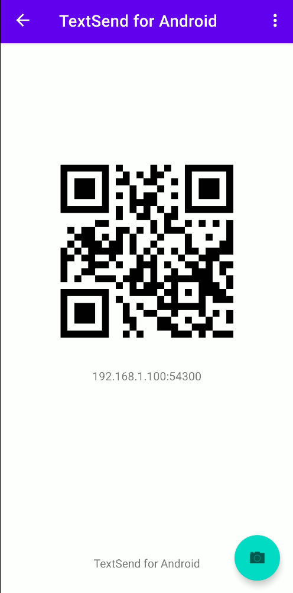
- 掏出另一台手机扫描二维码进行连接。连接成功后会有提示信息：
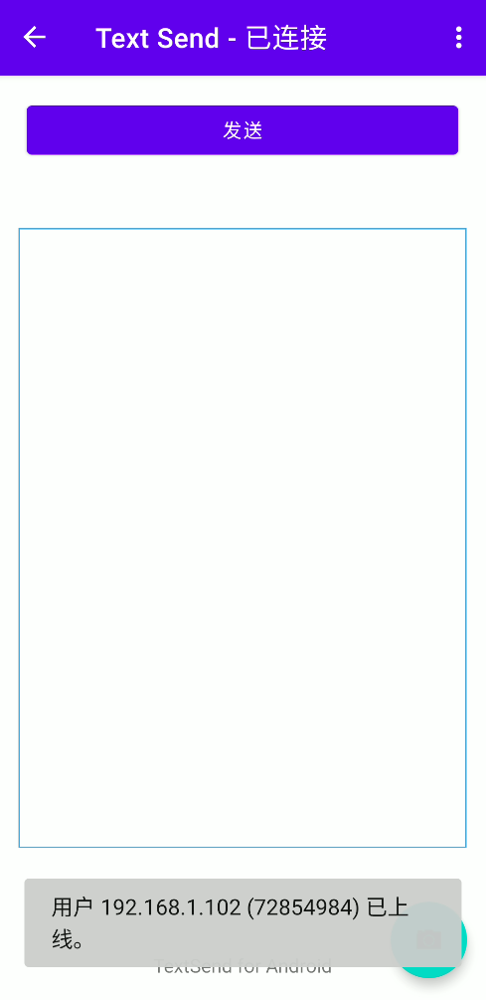
- 注意：这里的二维码依然是猜测的ip，实际IP可以查看 设置-无线网-无线网信息中的IPv4地址:
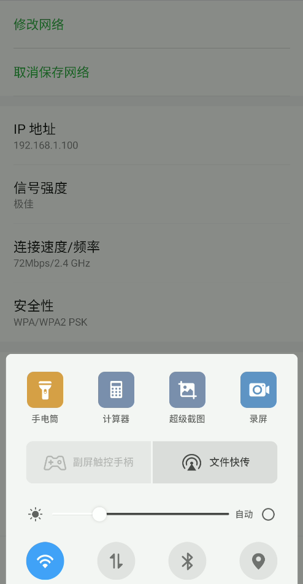
If you like this blog or find it useful for you, you are welcome to comment on it. You are also welcome to share this blog, so that more people can participate in it. If the images used in the blog infringe your copyright, please contact the author to delete them. Thank you !